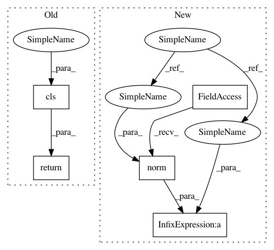

f1c0080b8439bcccad8c2576cf4f1b9d67d585ed,scipy/spatial/transform/rotation.py,Rotation,from_dcm,#Any#Any#,135
Before Change
if is_single:
return cls(quat[0])
else:
return cls(quat)
After Change
decision_matrix[:, -1] = decision_matrix[:, :3].sum(axis=1)
choices = decision_matrix.argmax(axis=1)
quat = np.empty((num_rotations, 4))
ind = np.nonzero(choices != 3)[0]
i = choices[ind]
j = (i + 1) % 3
k = (j + 1) % 3
quat[ind, i] = 1 - decision_matrix[ind, -1] + 2 * dcm[ind, i, i]
quat[ind, j] = dcm[ind, j, i] + dcm[ind, i, j]
quat[ind, k] = dcm[ind, k, i] + dcm[ind, i, k]
quat[ind, 3] = dcm[ind, k, j] - dcm[ind, j, k]
ind = np.nonzero(choices == 3)[0]
quat[ind, 0] = dcm[ind, 2, 1] - dcm[ind, 1, 2]
quat[ind, 1] = dcm[ind, 0, 2] - dcm[ind, 2, 0]
quat[ind, 2] = dcm[ind, 1, 0] - dcm[ind, 0, 1]
quat[ind, 3] = 1 + decision_matrix[ind, -1]
if is_single:
return cls(quat[0] / np.linalg.norm(quat[0]), normalized=True)
else:
return cls(quat / np.linalg.norm(quat, axis=1)[:, None],
normalized=True)
In pattern: SUPERPATTERN
Frequency: 3
Non-data size: 5
Instances
Project Name: scipy/scipy
Commit Name: f1c0080b8439bcccad8c2576cf4f1b9d67d585ed
Time: 2018-06-30
Author: adibhar97@gmail.com
File Name: scipy/spatial/transform/rotation.py
Class Name: Rotation
Method Name: from_dcm
Project Name: daavoo/pyntcloud
Commit Name: 11ea692c682074ac77b40d620c34212458f3b629
Time: 2016-12-01
Author: daviddelaiglesiacastro@gmail.com
File Name: pyntcloud/geometry/plane.py
Class Name: Plane
Method Name: from_equation
Project Name: daavoo/pyntcloud
Commit Name: 11ea692c682074ac77b40d620c34212458f3b629
Time: 2016-12-01
Author: daviddelaiglesiacastro@gmail.com
File Name: pyntcloud/geometry/plane.py
Class Name: Plane
Method Name: from_three_points